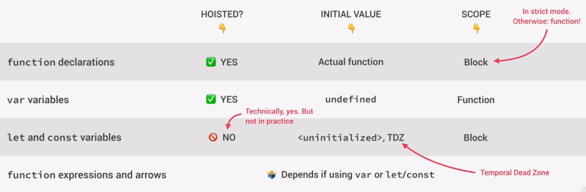

Hoisting makes some types of variables accessible in the code before they are declared.
They are "lifted" to the top of their scope.
Before execution, code is scanned for variable declarations, and for each variables, a new property is created in the variable environment object.
Hoisting was created so Function declarations could be used before they are declared. Also can make code more readable.
Functions can be called before they are declared.
var variables are hoisted, but they return as undefined. This was done since it was the only way Hoisting could function at the time it was created (since var were used in functions).
let and const are hoisted into the TDZ.
Function expression and Arrow Functions. Depends on if var or let/const was used. They work the same way as their variable types used.
So you can only use Function declarations before they are declared.
Region of code where the variable is defined, but cannot be used.
The TDZ helps you to know the variable was created. If it wasn't you'd get undefined.
This also makes const variables work the way they should work since they cannot be reassigned. They are only assigned when execution meets the declaration.
###########
#############
Variables can exist before you use them.
If you put vars in the wrong order (like after console.log that calls variable), JS autmatically moves that variables definition BEFORE the console.log out put.
So console.log returns undefined
JS rewrites your code to move var myDog; before console.log
Find more examples. This outputs 'undefined'.
function myFunction() {
console.log(myDog);
var myDog = "Rover";
}
myFunction();